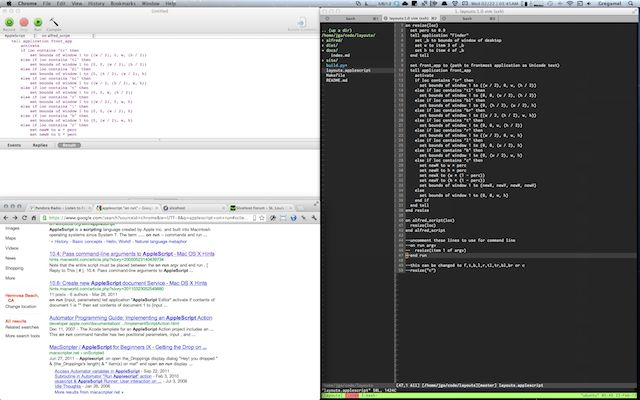
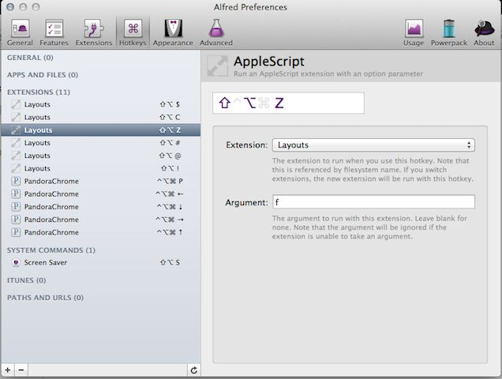

Layouts
Layouts is an applescript and an alfred extension to easily move and resize application windows.

Alfred
You can download the alfred extension here.
Command
- resize [f, t, b, l, r, tl, tr, bl, br, c, m]
Layouts
- f: full screen
- c: center window
- t: top half of screen
- b: bottom half of screen
- l: left half of screen
- r: right half of screen
- tl: top left quarter of screen
- tr: top right quarter of screen
- bl: bottom left quarter of screen
- br: bottom right quarter of screen
- m: move to next monitor
Hotkey support
Thanks to Alfred's new hotkey feature, you don't even have to trigger alfred to move your windows around.

Applescript
Go here to view the script.
Command Line
The script will work via the command line too! Make sure to uncomment the on run argv lines if you want to use it this way
osascript layouts.applescript f
History
0.0.4 (03/19/2012)
- fixed a few bugs in the multi monitor support
0.0.3 (03/18/2012)
0.0.2
0.0.1
Future
- automatic update support
- custom sizes
Contributors